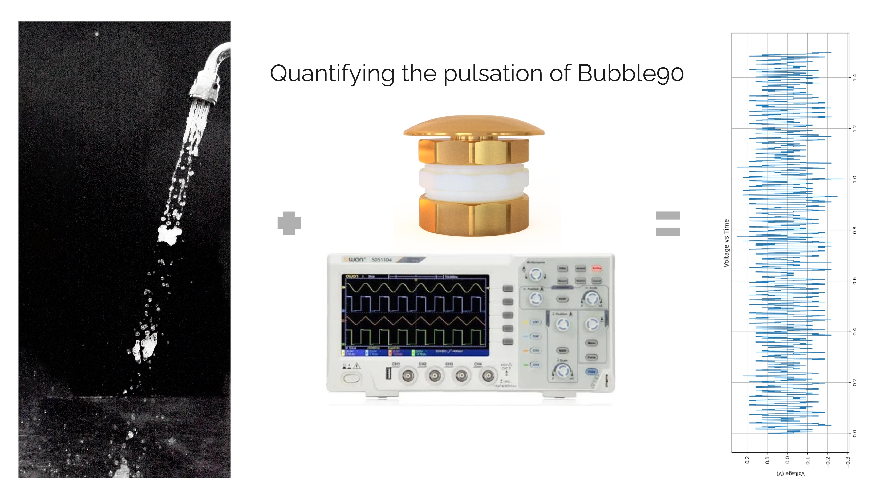
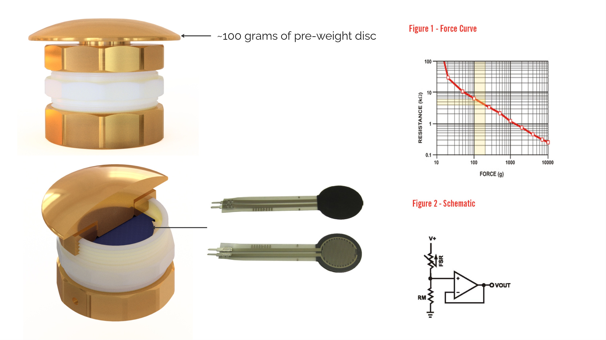
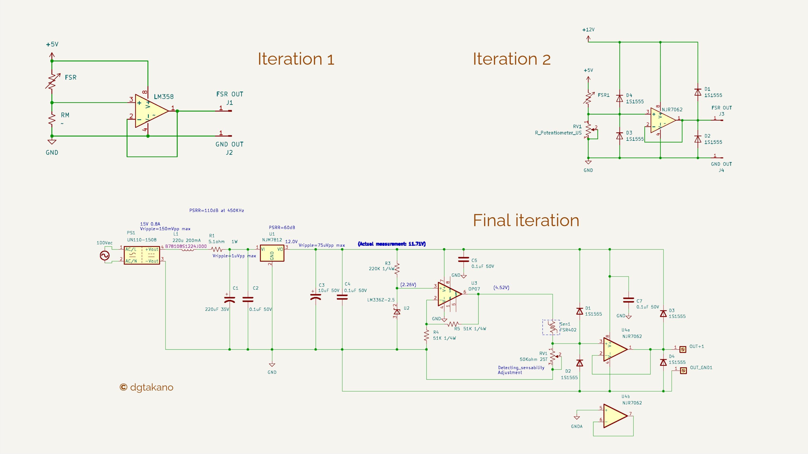
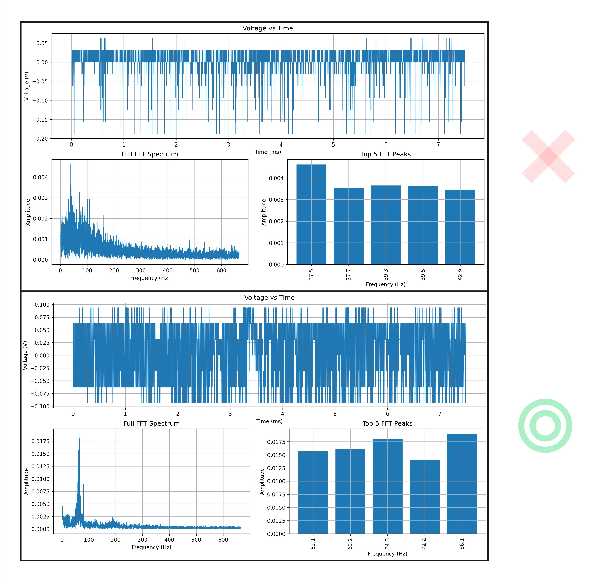

Pulsation Measurement Device

Bubble90 is the flagship product of DG TAKANO, widely sold across Japan and adopted by numerous national restaurant chains. It utilizes a unique pulsating flow generated entirely without moving parts, relying on the Venturi effect: water pressure from the tap creates suction that draws in air and mixes it with the water, producing a distinctive pulsating stream. Because Bubble90 is manufactured with extremely tight tolerances, even minor dimensional deviations can significantly impact the quality of pulsation. Traditionally, the pulsation quality was assessed manually—operators would feel the water flow by hand to judge its characteristics. This method is inherently prone to human error and inconsistency. Recognizing the need for a more objective, reliable, and repeatable evaluation method, this project was initiated to develop a dedicated device to measure and quantify the pulsation quality of Bubble90 units. This ensures consistent product performance, enhances quality assurance, and supports DG TAKANO's commitment to precision manufacturing.

The idea was to use a Force Resistance Sensor (FRS) to detect the pulsation amplitude and frequency of the water flow produced by Bubble90. The sensor captures the force variations caused by the pulsating stream. The analog signal from the FRS is recorded using an oscilloscope, capturing real-time waveform data of the pulsation. This data is then exported and processed using a Python script. The script performs a Fast Fourier Transform (FFT) on the signal, which decomposes the complex waveform into its constituent frequencies. This allows us to identify the dominant frequency component (corresponding to the pulsation frequency) and measure its amplitude, giving a quantitative assessment of the pulsation strength. By automating this analysis, we achieve a consistent, objective method to evaluate the pulsation characteristics, replacing subjective manual testing and improving overall quality assurance.

The above diagram illustrates the schematic and core logic of the system design through multiple development iterations:
Iteration 1:
This initial, simplistic approach employed a voltage divider circuit to monitor voltage fluctuations directly from the sensor. While straightforward, it lacked precision and was more susceptible to noise.
Iteration 2:
To improve measurement accuracy and protect the circuit, this version introduced a precision operational amplifier (op-amp) configuration along with diodes to guard against voltage spikes. This enhanced both signal clarity and system robustness.
Final Iteration:
The final, more advanced design incorporated electrolytic and ceramic capacitors to filter out high-frequency noise and smooth voltage variations. This was critical when converting AC 100V to DC 15V, ensuring a stable DC supply for the sensor and signal processing stages.

After carefully tuning the variable resistor, we were able to record a substantial amount of data with minimal error using the oscilloscope. The results clearly demonstrated a distinct difference between a good and a defective sample of Bubble90.
This approach not only enables us to differentiate between acceptable and defective units, but also quantifies how good a sample is by providing a percentage-based quality metric. This quantitative assessment adds significant value over the traditional pass/fail approach, offering deeper insights into product performance.